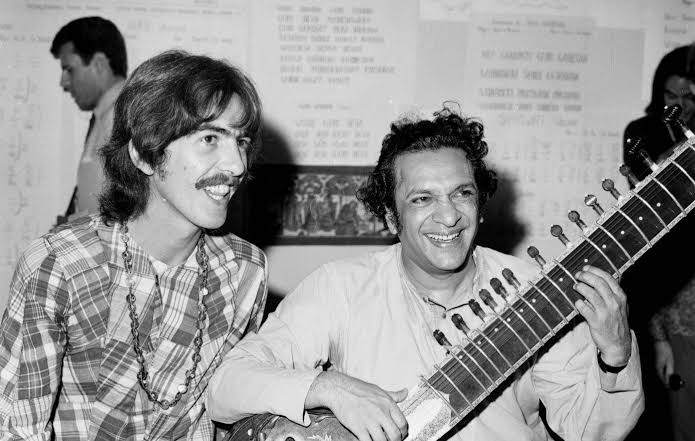

George Harrison
Guitarrista solo, compositor e a alma espiritual dos Beatles.
Juventude e Entrada na Banda
George Harrison nasceu a 25 de fevereiro de 1943, em Liverpool. Sendo o membro mais jovem do grupo, conheceu Paul McCartney no autocarro escolar, e foi Paul quem o apresentou a John Lennon para integrar a primeira versão da banda.
Apesar de ser inicialmente visto apenas como o miúdo talentoso na guitarra solo, a dedicação técnica e a capacidade de criar arranjos de guitarra precisos e marcantes ajudaram a definir a sonoridade primária dos Beatles no início da década de 60.

A Era Beatles e a Espiritualidade
Muitas vezes apelidado de "o Beatle quieto", George cresceu imensamente como compositor nos anos finais da banda. Foi o responsável pela introdução da cítara e da música indiana no rock ocidental, influenciando o mergulho da banda na psicodelia.
As suas composições ganharam um peso emocional gigantesco. Canções intemporais como "Something", "Here Comes The Sun" e "While My Guitar Gently Weeps" figuram entre as músicas mais belas e amadas de toda a discografia do grupo.
Carreira a Solo e Legado
Logo após a dissolução da banda, George lançou o monumental álbum triplo "All Things Must Pass" (1970), frequentemente considerado o melhor trabalho a solo de um ex-Beatle, impulsionado pelo hit "My Sweet Lord".
Harrison também foi pioneiro na filantropia no rock ao organizar o "Concert for Bangladesh". Faleceu em 2001, mas deixou um legado marcado pela genialidade musical e por uma profunda busca espiritual.